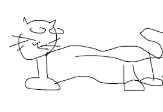

Det hela började en regnig tisdag när vår grundare insåg att post-it-lappar, pizzakartonger och bordsdukar kanske inte var de mest pålitliga verktygen för att planera livet. Lösningen? Whiteboards – stora, blanka ytor där idéer kan flöda fritt (och suddas ut när de inte längre känns så smarta). Så föddes Tavora. Med en dröm om att rädda världen från dålig planering, försvunna anteckningar och obefintliga to-do-listor, började vi sälja whiteboardmaterial till folket. Idag levererar vi till klassrum, kontor och kök över hela landet.

Sedan den där tisdagen har vi testat tuschpennor tills fingrarna blivit blå, designat tavlor i alla möjliga (och omöjliga) storlekar, och blivit experter på att säga “den går att sudda!” med självförtroende. Vi tar vårt uppdrag på största allvar – men aldrig oss själva. Tavora finns för dig som vill planera lite bättre, drömma lite större, och kanske dra ett streck över hela veckan och börja om. Det är okej, tavlan är ju ändå torrtorkningsbar.
Visste du att…?
Vår första whiteboard användes för att rita en katt. Den var ganska ful, men det satte tonen för vår kreativa resa.
